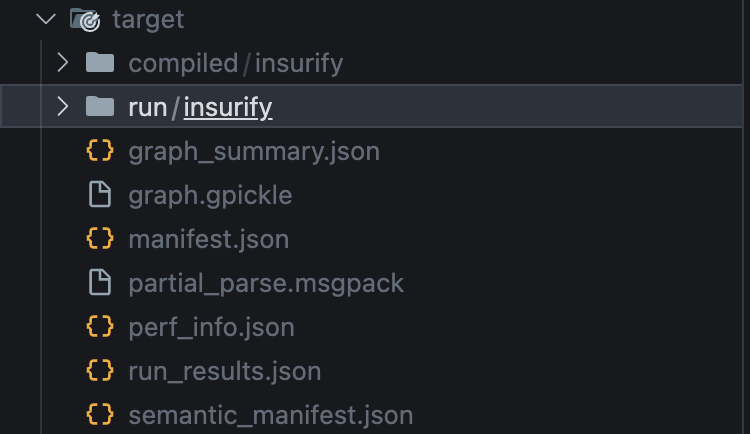

target/ — what dbt writes when it runs
Every dbt command produces files under dbt_project/target/. Most of the time you ignore them — dbt manages them itself, and the clean-targets: config means dbt clean wipes them. But when something’s wrong with a build, the target/ directory is where you debug from.
This lesson walks through every artifact dbt writes there and what to read it for.
After a successful dbt build, four things matter most:
dbt_project/target/
├── manifest.json ← the parsed project (every node + dependency)
├── run_results.json ← what just happened in the last command
├── compiled/ ← rendered SQL (Jinja resolved, ready to read)
└── run/ ← rendered SQL wrapped in DDL (what actually hit the warehouse)
Knowing these four is enough to debug 95% of dbt issues.
manifest.jsonThe most important file. dbt’s parsed view of the entire project — every model, source, test, macro, exposure, snapshot, with their config, dependencies, and metadata.
You read it to answer:
unique_id and inspect config.materialized, depends_on.nodes, etc.nodes block has the resolved test list.depends_on.nodes listing the upstream models.In Stages 2–6 you’ve seen verifier rules that read this file: manifest_materialization, manifest_source_declared, manifest_test_count, manifest_macro_exists, manifest_exposure_exists. They’re all just JSON queries against manifest.json.
It’s regenerated by every dbt command that parses the project (run, build, test, parse, compile, docs generate).
run_results.jsonWhat happened in the most recent dbt command. Each entry has a unique_id, status (success, pass, error, fail, warn, skipped), execution_time, and any error message.
You read it to answer:
status: error.severity_warn test would show status: warn here.execution_time field. Useful for finding slow nodes.CI systems read this file to decide if the build succeeded. The verifier rules dbt_build_success and dbt_test_success parse it.
It’s overwritten on every command, so if you run dbt run then dbt test, the test results replace the run results. To preserve both, use dbt build (interleaves them in one command) or copy run_results.json between commands.
compiled/<project_name>/<model_path>/<file>.sqlThe output of dbt’s Jinja resolution. For a model models/staging/stg__customers.sql that contains:
select id as customer_id, ... from {{ source('jaffle_shop', 'raw_customers') }}
The compiled file at target/compiled/dbt_project/models/staging/stg__customers.sql reads:
select id as customer_id, ... from "main"."raw_customers"
{{ source(...) }} resolved to a fully-qualified table name. {{ ref(...) }} resolves the same way. Macros expand inline.
You read this to answer:
where clause not filtering?” — if the rendered SQL doesn’t have your where, the Jinja branch wasn’t entered.Updated every time the model is parsed.
run/<project_name>/<model_path>/<file>.sqlThe actual SQL dbt sent to the warehouse — including the create or replace table / insert into / merge into wrapper that handles materialization.
create or replace table "main"."stg__customers" as (
select id as customer_id, ...
from "main"."raw_customers"
);
Different from compiled/ because of the wrapping DDL. For incremental models, you’ll see the merge into ... or insert into ... statement here instead of create or replace.
You read this to answer:
merge clause in the run/ file.Only updated when the model is actually run (not on dbt parse alone).
For completeness, here’s what else dbt writes:
| File | Purpose | When to read |
|---|---|---|
catalog.json |
Column-level metadata pulled from the warehouse via dbt docs generate (column names + types for every model). The docs site reads this. |
When a column appears in the warehouse but not the docs site, check if dbt docs generate was run. |
graph.gpickle |
Pickled (binary) version of the dependency graph, used as a parser cache. | Never. dbt reads it; you don’t. |
graph_summary.json |
High-level DAG summary used by some visualization tools. | Rarely. |
partial_parse.msgpack |
Parser cache to speed up subsequent runs by skipping unchanged files. | When dbt seems to be using stale parsing — rm it to force a full reparse. |
perf_info.json |
Performance metrics for the run (parse time, compile time, etc.). | Optimization debugging on slow projects. |
semantic_manifest.json |
Metadata for dbt Semantic Layer (metrics, semantic models). | Only if you use the semantic layer. |
index.html (in target/) |
The static docs site — same one dbt docs serve renders. |
When you want to host the docs without running dbt docs serve. |
dbt clean removesdbt clean wipes the directories listed under clean-targets: in dbt_project.yml. Default:
clean-targets:
- target
- dbt_packages
So dbt clean wipes both. After it, you need dbt deps to reinstall packages, and the next command will recreate target/ from scratch.
compiled/ when you should read run/ (or vice versa). compiled/ is the SQL minus the materialization wrapper; run/ is what actually executed. For “why didn’t my data update?” — run/. For “why is my Jinja wrong?” — compiled/.run_results.json after multiple commands. It’s overwritten each command. If you ran dbt run then dbt test, only the test results survive. Use dbt build (one command, both results preserved) or save the file between commands.target/ files manually. dbt regenerates them. Any edit gets blown away on the next command. If you need to change SQL, change the model file.target/ to git. It’s gitignored in this project (because dbt_project/ is gitignored entirely). In your own projects, never commit it — it’s huge and reproducible from source.The exercise: run dbt build, list target/, and verify the four critical artifacts are present.
Press n to start.
1. From inside dbt_project/, run a fresh build:
cd dbt_project
dbt build
This refreshes everything: seeds, models, snapshots, tests. After it completes, target/ is fully populated.
2. List the top-level contents of target/:
ls target/
You should see entries like:
catalog.json
compiled
graph.gpickle
graph_summary.json
manifest.json
partial_parse.msgpack
perf_info.json
run
run_results.json
semantic_manifest.json
(Exact list varies by dbt version. The four highlighted in the lesson are the important ones.)
3. Peek at manifest.json to find one of your models. It’s a big JSON blob, so use jq (or python -m json.tool | grep) to scope:
duckdb -c "select unique_id, resource_type, depends_on::varchar from read_json('target/manifest.json', records=true)" 2>/dev/null | head -20
(Or simpler — open target/manifest.json in your editor and search for fct_orders.)
4. Inspect the compiled SQL for a model with ref() calls:
cat target/compiled/dbt_project/models/marts/fct_orders.sql
Notice how {{ ref('stg__orders') }} got replaced with "main"."stg__orders". That’s Jinja resolution.
5. Compare to the run-time SQL (with the create or replace wrapper):
cat target/run/dbt_project/models/marts/fct_orders.sql
This file has the full DDL dbt issued — create or replace table ... as (select ...). The compiled version has only the inner select.
6. Check run_results.json for the latest build’s results:
duckdb -c "select unique_id, status, execution_time from read_json('target/run_results.json', records=true).results" 2>/dev/null | head -10
(Or just open the file.) You’ll see one entry per node, with status success or pass.
7. Press v to verify.
Four path_exists checks:
- dbt_project/target/manifest.json (the parsed project metadata)
- dbt_project/target/run_results.json (latest command’s results)
- dbt_project/target/compiled (compiled SQL directory)
- dbt_project/target/run (run-time SQL directory)
If dbt build completed successfully, all four exist.
| Symptom | Fix |
|---|---|
path 'dbt_project/target/manifest.json' does not exist |
dbt hasn’t been run since the last dbt clean. Run dbt build (or just dbt parse, which produces manifest.json without running models). |
path 'dbt_project/target/run' does not exist |
The run/ directory only appears after at least one model has been run (not just parsed). dbt parse alone doesn’t create it; dbt run or dbt build does. |
path 'dbt_project/target/compiled' does not exist |
Same as above — needs at least one compile step. dbt compile alone is enough; so is dbt run / dbt build. |
Files exist but dbt build errored on a model |
One of the Stage 4 / Stage 5 / Stage 6 changes broke a downstream. Run dbt build and read the errors carefully — the verifier won’t pass until the build is green. |
That’s the last exercise of Stage 6. Press n to take the stage quiz. The final progress.txt line covers Stage 6’s quiz, and you’ve completed all six stages of the course.